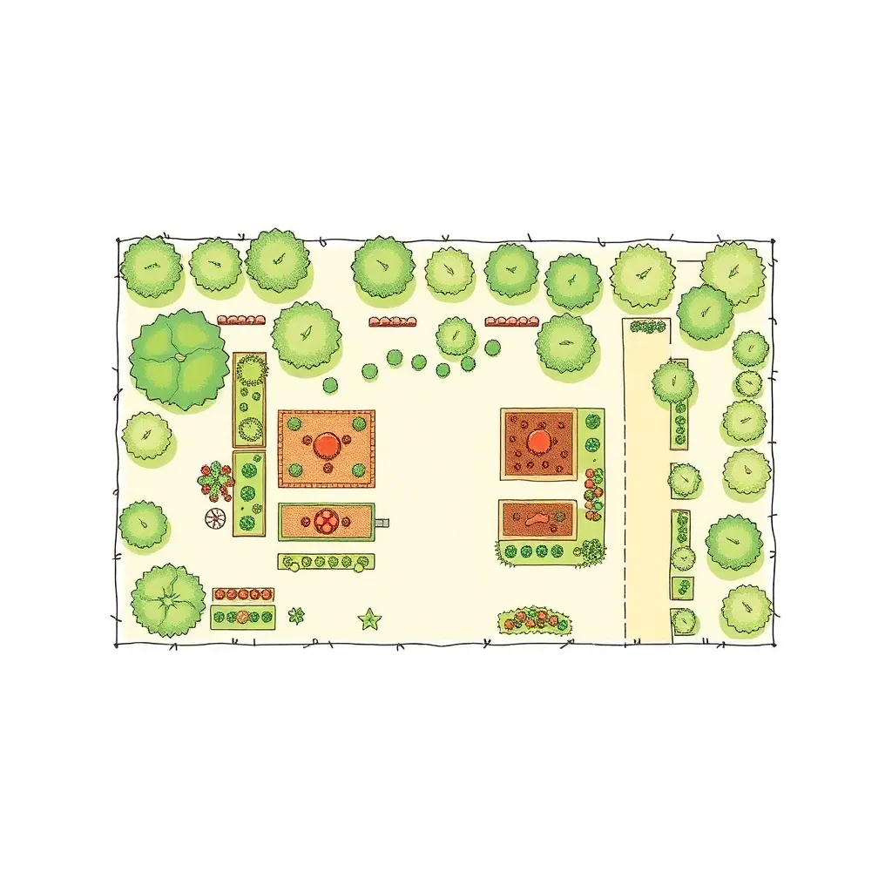
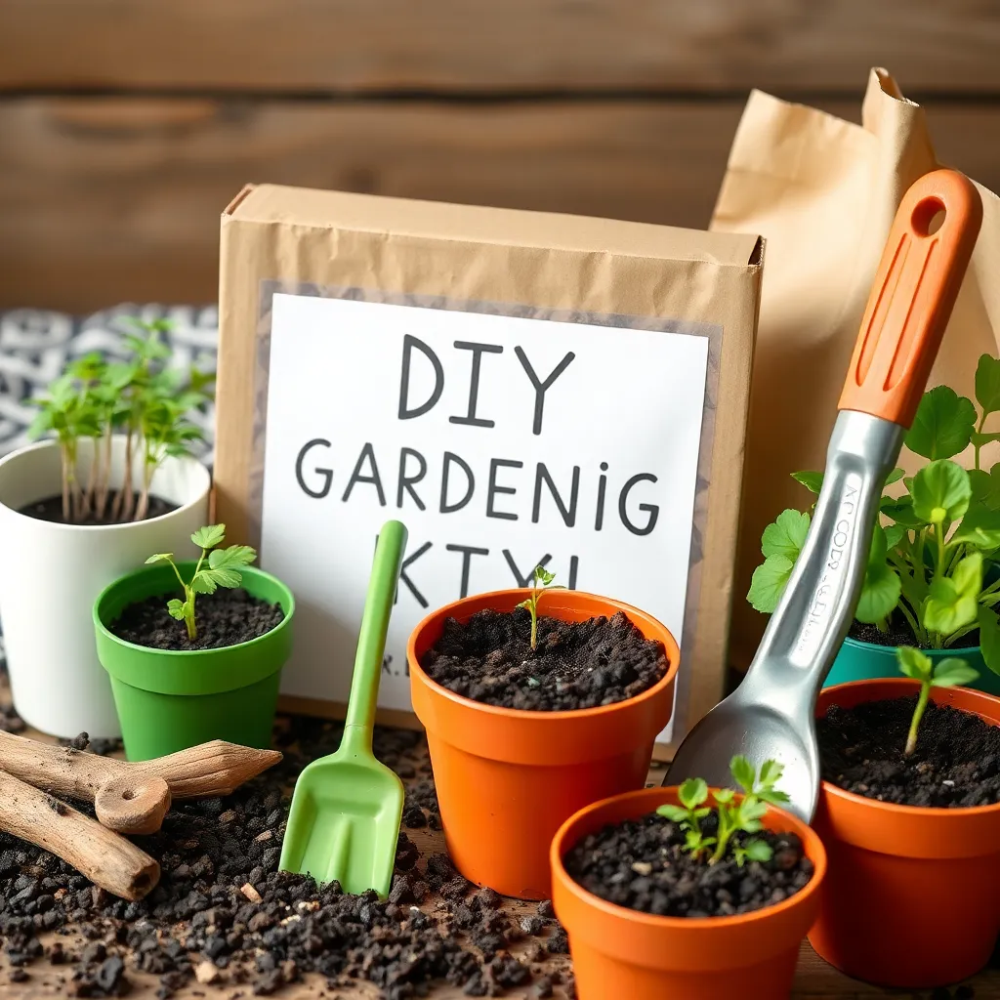
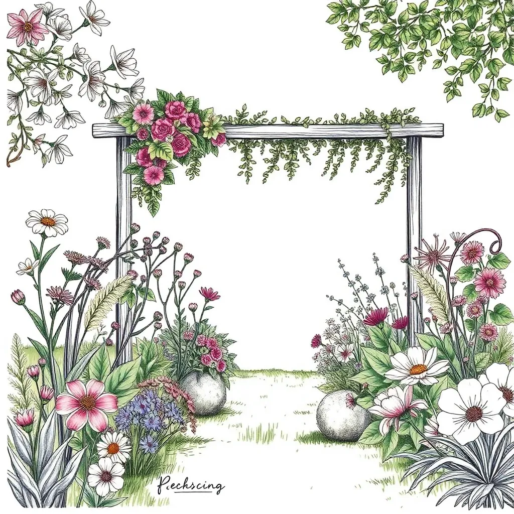
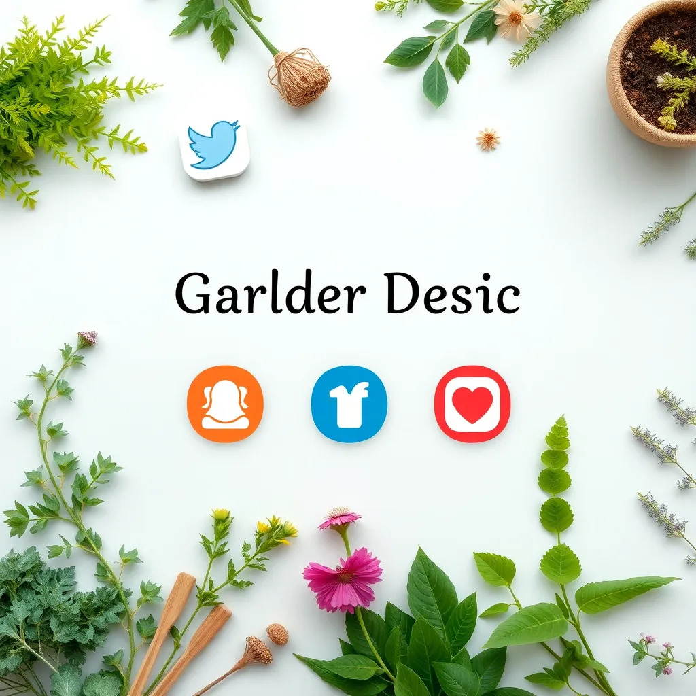

Garden Planning & Consulting
Our expert consultation service begins with a thorough evaluation of your outdoor space, analyzing soil health, sunlight exposure, and climate conditions. We collaboratively design tailored garden layouts that maximize beauty and sustainability.
We focus on selecting native, low-maintenance plants to ensure a thriving garden with minimal water and chemical inputs. Seasonal layouts and companion planting strategies enhance biodiversity and naturally deter pests.
Whether you desire an edible herb haven, a serene flower retreat, or a mixed-use garden, we guide you through every step — from initial sketches to plant selection and ongoing care advice.

DIY Garden Kits
Designed for beginners and experienced gardeners alike, our DIY kits include everything needed to start your mini oases. Each kit contains premium seeds matched to your region, organic soil mixes, biodegradable pots, and comprehensive step-by-step guides.
From succulent terrariums to herb gardens and wildflower patches, our kits encourage creativity and hands-on learning. We also provide seasonal kits, perfect for gifting or experimenting with new plants throughout the year.
With RootCraft Studio's DIY kits, you gain confidence, skills, and the joy of cultivating living beauty yourself.

Boutique Garden Design
Transform your garden into a stunning sanctuary with our boutique design service. Here, art meets nature through carefully curated plant palettes, natural materials, and customized hardscapes.
Our designs integrate subtle water features, textured pathways, and native flora to create sensory-rich environments that evolve with the seasons. We work closely to incorporate your tastes, lifestyle, and local ecosystem.
Each garden is uniquely crafted as a peaceful retreat perfect for reflection, gatherings, or elevating your home's curb appeal.

Influencer Collaborations
Partner with RootCraft Studio to create captivating content that inspires your followers to embrace the joy of gardening. We provide unique designs, exclusive DIY kits, and expert insights to help your social channels blossom.
Our marketing collaborations focus on authentic storytelling, eco-conscious lifestyle promotion, and trendsetting garden aesthetics.
Collaborate with us for sponsored posts, giveaways, and live workshop streams to engage and grow your audience.